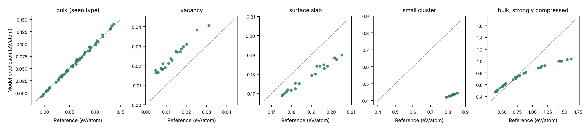

Does a learned potential know when it is wrong?
I trained a neural-network potential on bulk copper only, then showed it structures it had never seen. Its error grew roughly 260-fold on a small cluster, and the disagreement between eight copies of the model, trained from different random starts, grew with it.
A small learning project by Raja Ahmad Mahmood. Code and data: github.com/Ahmadbey678/mlip-trust-demo
Actual error against the reference energyThe model's own uncertainty (ensemble disagreement)
Values are meV per atom on a log scale from 1 to 1000. The shaded column is the only structure type present in training.
Why this matters
Quantum-mechanical energy calculations such as DFT are accurate but too slow for long simulations. A machine-learned interatomic potential is trained on such calculations and then predicts energies far faster. Its weak point is generalization: it can be wrong on atom arrangements unlike its training data and give no sign of it.
This experiment asks whether a cheap warning signal exists, using a system small enough to run in 20 seconds.
How it works
The whole experiment is one Python file (mlip_demo.py) that runs in about 20 seconds. These are its five steps, with the code that does each one.
-
Build structures
Training data is 300 copper cells (32 atoms each) with the lattice constant drawn between 3.45 and 3.75 Å and every atom nudged by up to 0.10 Å. The test sets are built the same way, with a vacancy, a surface, a cluster, or a lattice squeezed beyond the training range.
Training 3.45 to 3.75 Compressed test 3.05 to 3.303.03.23.43.63.8 ÅVacancy, slab and cluster cells use 3.58 to 3.64 Å, inside the training range. For them the arrangement is new, not the spacing.
Show code
def make_bulk(n, rattle, a_range): out = [] for _ in range(n): a = RNG.uniform(*a_range) at = bulk("Cu", "fcc", a=a, cubic=True).repeat((2, 2, 2)) at.rattle(stdev=RNG.uniform(*rattle), seed=int(RNG.integers(1e9))) out.append(at) return out -
Compute reference energies
ASE's EMT potential gives the energy of each structure. This stands in for DFT, which I did not run.
Show code
def energy_per_atom(atoms): atoms.calc = EMT() return atoms.get_potential_energy() / len(atoms) -
Describe each structure with numbers
For every atom, symmetry functions summarize its neighbours within 5 Å: 5 radial functions (how many neighbours sit at which distances) and 6 angular ones (the angles between neighbour pairs). Averaged over atoms, each structure becomes 11 numbers that do not change if you rotate it or relabel its atoms.
Show code
def descriptors(atoms): """Per-atom symmetry functions (radial G2 and angular G4), averaged over atoms.""" n = len(atoms) # neighbours within cutoff, with periodic images from ase.neighborlist import neighbor_list i, j, d, D = neighbor_list("ijdD", atoms, RC) nrad = len(ETAS) # 5 radial functions (eta, Rs pairs), then len(ANG) angular ones feats = np.zeros((n, nrad + len(ANG))) for a in range(n): m = i == a da, Da = d[m], D[m] fc = cutoff(da) for k, (eta, rs) in enumerate(zip(ETAS, RS)): feats[a, k] = np.sum(np.exp(-eta * (da - rs) ** 2) * fc) # angular terms over neighbour pairs if len(da) > 1: cosm = (Da @ Da.T) / np.outer(da, da) iu = np.triu_indices(len(da), 1) c = cosm[iu] r1, r2 = da[iu[0]], da[iu[1]] r12 = np.linalg.norm(Da[iu[0]] - Da[iu[1]], axis=1) f = cutoff(r1) * cutoff(r2) * cutoff(r12) for k, (eta, zeta, lam) in enumerate(ANG): t = (1 + lam * c).clip(0) ** zeta * np.exp(-eta * (r1**2 + r2**2 + r12**2)) * f feats[a, nrad + k] = 2 ** (1 - zeta) * np.sum(t) return feats.mean(axis=0) -
Train eight networks
Each network has two hidden layers of 32 units and predicts energy per atom from the 11 numbers. All eight train on the same 300 structures and differ only in their random starting weights.
Show code
sc = StandardScaler().fit(Xtr) models = [] for seed in range(8): m = MLPRegressor(hidden_layer_sizes=(32, 32), activation="tanh", solver="lbfgs", max_iter=3000, tol=1e-10, random_state=seed, alpha=1e-4) m.fit(sc.transform(Xtr), ytr) models.append(m) -
Test on unseen structures and compare
The average of the eight predictions is the model's answer. Its distance from the reference energy is the error. The standard deviation across the eight is the uncertainty, which needs no reference energy to compute.
Show code
preds = np.array([m.predict(sc.transform(X)) for m in models]) mean, std = preds.mean(0), preds.std(0) err = np.abs(mean - y)
What the model predicts
Each panel plots the model's energy against the reference energy for one test set. A point on the dashed line is a perfect prediction. Bulk copper sits on the line. On the cluster the model predicts about 0.43 eV/atom where the reference is about 0.82, so the errors are systematic, not random noise: mostly too low on the slab, cluster and compressed bulk.

Does the disagreement track the error?
Mostly yes. Across all 150 test structures the rank correlation between ensemble disagreement and absolute error is 0.91. Structures the models agree on are predicted well, and large disagreement goes with large error.

| Test set | Structures | Error (meV/atom) | Uncertainty (meV/atom) |
|---|
What this does not show
The reference is EMT, a simple analytic model, not DFT, and the system is one element. The network predicts energy per atom from descriptors averaged over atoms, not a sum of per-atom contributions, and it does not predict forces. Each test set is small, and the vacancy, slab and cluster sets are one structure type with small random displacements.
The ensemble disagreement works as a warning, not a calibrated error bar. On the surface slab it overstates the error about twelve times (113 against 9.7 meV/atom), and on the vacancy it understates it (7.1 against 11.0).
The numbers for the small test sets are sensitive to the random initialization. While preparing this page I removed 20 unused, always-zero input columns from the descriptor array, which changed the random starting weights, and reran. The vacancy error moved from 4.9 to 11.0 meV/atom and the slab error from 19.5 to 9.7, so those two swapped places. Bulk stayed lowest, the cluster and compressed bulk stayed highest, and the correlation stayed at 0.91. The page shows the second run. My very first run used the Adam optimizer, converged poorly, and was replaced by L-BFGS.
Run it
git clone https://github.com/Ahmadbey678/mlip-trust-demo cd mlip-trust-demo pip install -r requirements.txt python mlip_demo.py # about 20 seconds, writes results.json python make_figures.py